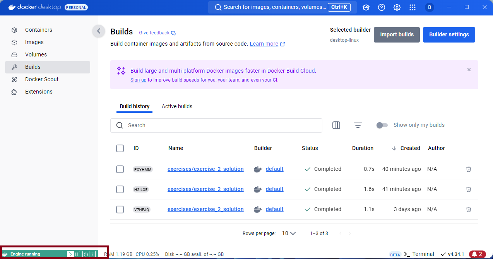
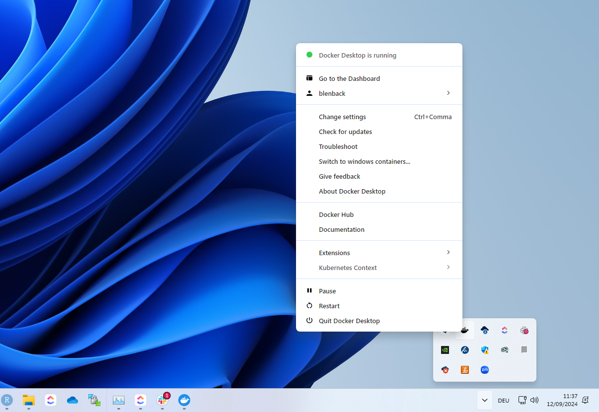
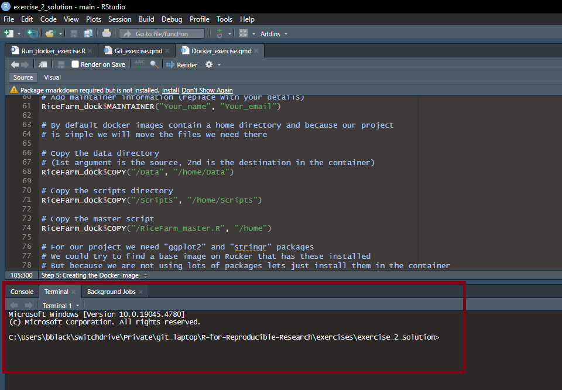
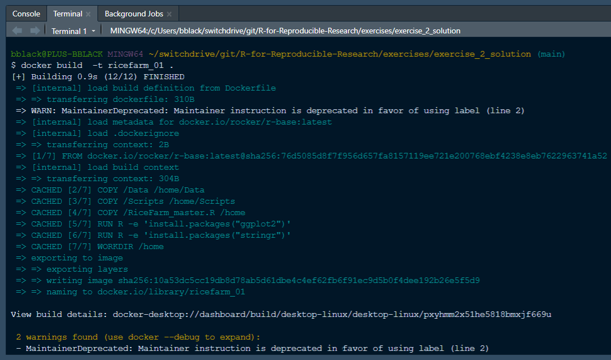
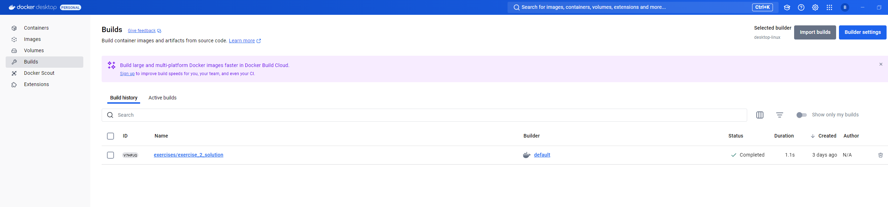
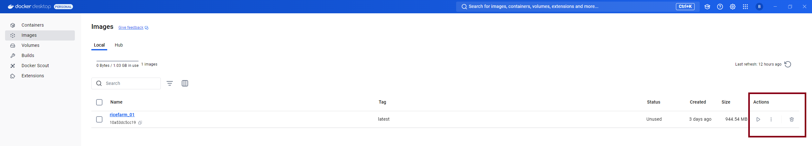
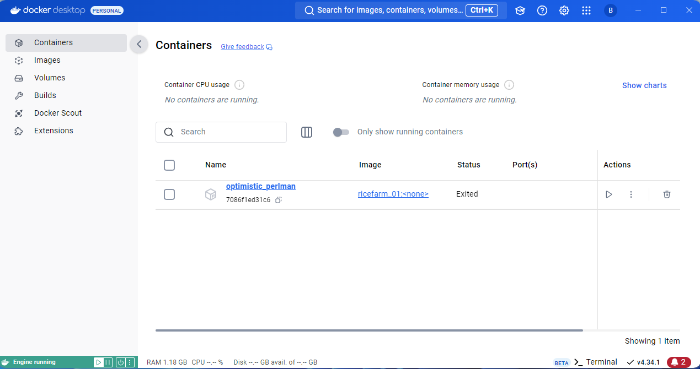
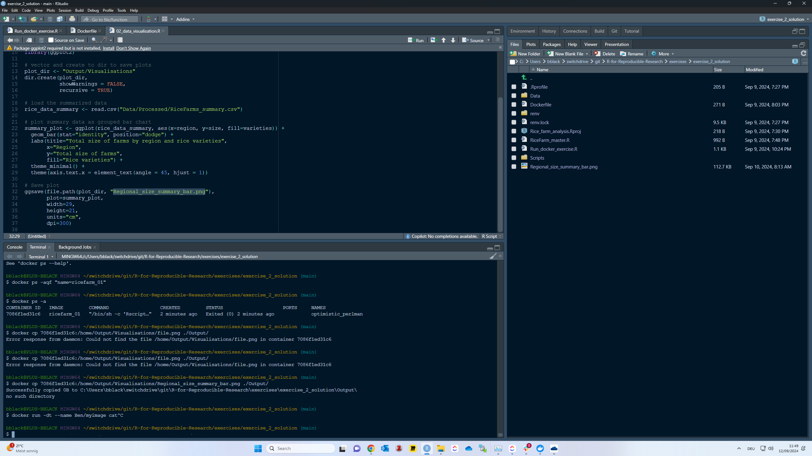
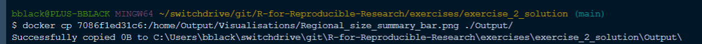

# Load dockerfiler package
library(dockerfiler)
# Get your R version to select a base image to use for your image/container
R.Version()$version.string
# Create a dockerfile template object using the Dockerfile class from the
# dockerfiler package and specify your version of R in the base image name
# my version is 4.3.1 hence the base image is rocker/r-ver:4.3.1
# but you should replace the end of this string with your version number from above
RiceFarm_dock <- Dockerfile$new(FROM = "rocker/r-ver:4.3.1")
# Add maintainer information (replace with your details)
RiceFarm_dock$MAINTAINER("Your_name", "Your_email")
# By default docker images contain a home directory and because our project
# is simple we will move the files we need there
# Copy the data directory
# (1st argument is the source, 2nd is the destination in the container)
RiceFarm_dock$COPY("/Data", "/home/Data")
# Copy the scripts directory
RiceFarm_dock$COPY("/Scripts", "/home/Scripts")
# Copy the master script
RiceFarm_dock$COPY("/RiceFarm_master.R", "/home")
# For our project we need "ggplot2" and "stringr" packages
# We could try to find a base image on Rocker that has these installed
# But because we are not using lots of packages lets just install them in the container
# Note that the R commands are wrapped in `r()` which is a helper function from dockerfiler
# that then wraps the command in the correct syntax for the Dockerfile
RiceFarm_dock$RUN(r(install.packages("ggplot2")))
RiceFarm_dock$RUN(r(install.packages("stringr")))
# Add the command to run the master script
# Note the use of `Rscript` which is the command line tool included with R to run scripts
RiceFarm_dock$CMD("Rscript /home/RiceFarm_master.R ")
# Save the Dockerfile
RiceFarm_dock$write()
# Create dir in the host directory to receive the results from container
dir.create("/output")Containerization with Docker exercise
In this exercise we will create and run a Docker container for an example R project. The project is the same that is created in the first workflow exercise, however to save time or in case you haven’t completed this exercise we will start with the finished output from it.
Warning: Docker is a complex software and getting Docker Desktop running on different machines is not always smooth. For example, I had no problem getting it running on my desktop computer but my work laptop did not have the capabilities. If you do run into issues there is good support available online but also asking for help from your IT department may be a good idea.
If you would prefer to view the exercise script offline, here is a PDF version: Download exercise instructions
Step 1: Download the resources
Click here to download the resources for the exercise: Download resources for exercise
Unzip the downloaded file and move the folder to a location on your computer where you can easily find it.
Step 2: Download Docker
Download Docker Desktop for your operating system from the Docker website.
Once downloaded run the installer like you would for other software. If your computer is managed by your institution or your employer you will likely need an admin account to run the installer and you may need to restart your computer after installation.
While you are running the installer it is useful to make a Docker account. This is not necessary but can be useful for managing your containers. You can also sign in with your GitHub account.
Step 3: Open Docker desktop
Open the Docker desktop app. If the app does not open you may need to yourself to the program user-group on your computer. This is a common issue on Windows machines because only the admin account is added to the user-group by default. To add yourself to the user-group search computer management in the start menu and right-click and select to run it with admin privileges. Then navigate to Local Users and Groups -> Groups -> Docker Users. Right click on Docker Users and select Add to Group. Then add your user account to the group.
Once the Docker desktop app is open it should automatically start the docker engine which is the software that runs the containers. In the bottom left of app window you will see the status of the engine.

Alternatively if you look in the system tray on Windows or the top menu bar on Mac. You will see an icon of the Docker whale logo and if you click on this you can see the status of the engine.

Step 4: Creating the Dockerfile
- Open Rstudio and navigate to the folder you downloaded in step 1.
- Create a new R script and name it
Create_Dockerfile.R. - Install the Dockerfiler package:
install.packages("dockerfiler"). - Add the following code to the script and replace the entries with your details:
- After running this code you will see that a
Dockerfilehas been created in the directory where you downloaded the resources.
Step 5: Creating the Docker image
The Docker command
buildis used to create aDocker imagefrom the instructions contained in yourDockerfile.The
buildcommand should be called through a Command Line Interface (CLI) such as the terminal in Rstudio or the CLI of your operating system (e.g Command Prompt for Windows).In Rstudio switch to the terminal tab next to the console pane:

Run the following command:
docker build -t ricerarm_01 .Note: The-tflag is used to tag the image with a name (in this case we are usingricerarm_01). The.at the end of the command is used to specify the current directory as the location ofDockerfilethat is to be used.After running the command you will see the Docker engine pulling the base image from the Docker Hub and then building the image. This process can take a few minutes depending on the size of the base image and the number of packages you are installing. The output in the terminal will look something like this:

Once the image has been built you can check that it is there by running the command
docker imagesin the terminal. This will show you a list of all the images on your computer. You should see the image you just created in the list.Alternatively you can check the image in the Docker desktop app. You will see the image in the list of images on the left of the app window. You can inspect the image by clicking on it and see the details of the image:

Step 6: Running the Docker container
The Docker command
runis used to run a container from an image.This can be done through the CLI: In the terminal tab in Rstudio run the following command:
docker run ricerarm_01.Or in the Docker desktop app: Click on the image you want to run and then click the run button in the top right. This will open a window where you can specify the settings for the container but for now you should just run the container with the default settings.

- After running the container you can also check the status of the container in the Docker desktop app. You will see the container in the list of containers on the left of the app window. You can inspect the container by clicking on it and see the details of the container.

Step 8 Copying files from the container to the host
One way to access the files created inside your container is to mount a directory from your host machine to a directory in the the container. This is done using the
-vflag in thedocker runcommand. However, this is not so effective in the example container we are using because the code is completed in a matter of seconds and after that the container is exited.Instead we will copy the output files from the container using the CLI. To do this you need to know the
container IDof the container you want to copy files from. You can get the container ID by running the command:docker ps -ain the terminal, this will show you a list of all the containers on your computer and in the terminal output you can copy the ID:

- Now you have the ID in the terminal run the command:
docker cp <Container ID>:/home/Output/Visualisations/Regional_size_summary_bar.png ./Output/and replace the<Container ID>with the ID you copied. The first argument/home/Output/Visualisations/Regional_size_summary_bar.pngis the path to the file you want to copy in the container. The second argument./Output/is the path to the directory to copy the file to on your host machine, again this is a relative path and the.specifies the current directory. After running the command you should a message printed in the terminal and the file should be copied to the directory you specified:

That’s it, you have successfully created a Dockerfile, Docker image and container, run your code inside the container and copied the output back to your host machine. If you were to share the Dockerfile with someone else they could build the image and run the container on their machine and get exactly the same results as you. Obviously this is a very simple example but the same principles apply to more complex projects where reproducibility becomes more challenging.